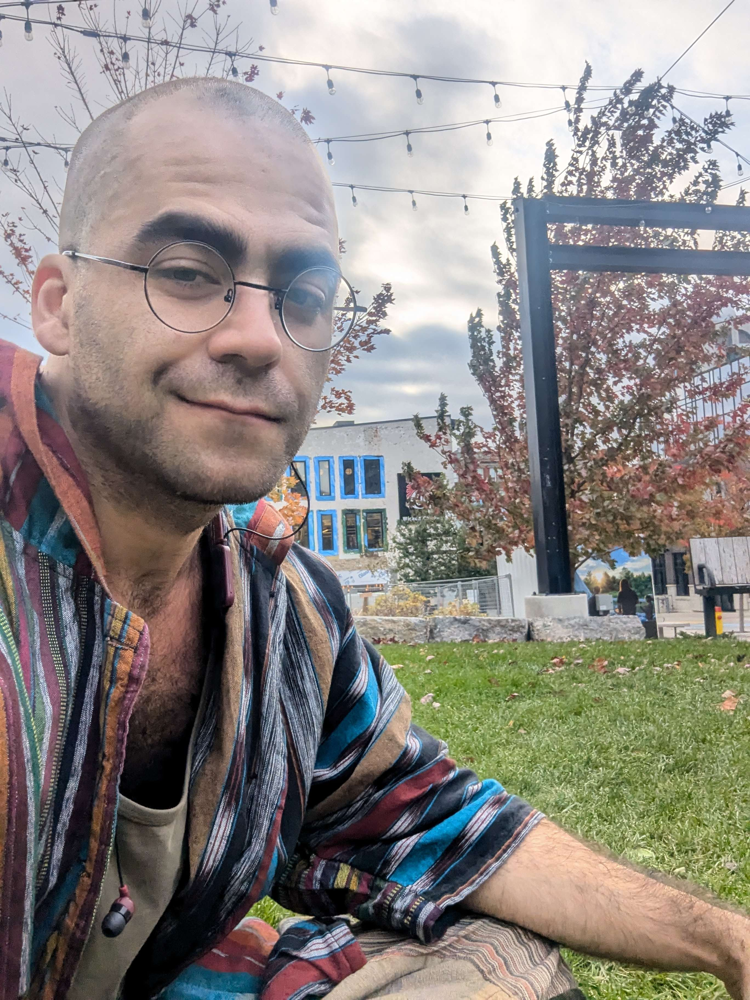

Zed Poirier
Technical Artist & Realtime VFX Specialist
Senior level experience with a strong focus on stylized gameplay clarity, shader systems, and performant visual effects across Unity, Unreal, and custom rendering workflows.
I specialize in the space where art direction, player readability, and technical problem-solving intersect. Building shaders, gameplay-driven VFX, and production-ready tools that elevate both visual impact and iteration speed. My recent work has centered on stylized effects, VR/mobile optimization, and close collaboration with art and engineering teams to solve complex visual challenges.
Please reach out via email (button below) and tell me all about the weird shaders or fancy particles in your latest project!
Cloudhead Games
During my time at Cloudhead Games I worked on a VR title built for Meta Quest, contributing real-time shaders, gameplay-driven VFX, and pipeline tooling across a fast-moving production.
A highlight was implementing a multi-stage enemy respawn sequence... A mechanic with layered narrative timings that required coordinating between Art, Engineering, and Design to map game state transitions of a custom dissolve shader system. I precisely synced material swaps, shader properties, and particle systems with each phase of the spawning events.
On the tooling side, I built a normal map packing utility that merged a main and detail map into a single RGBA texture, helping to reduce the number of texture samplers needed in our character shader.
Due to our NDA I can't share visuals publicly, but I'm happy to walk through the work in detail during a call.
God of Riffs (VR)
At Boss Music Games, I focused on gameplay-driven VFX and technical art solutions that strengthened combat readability, impact timing, and player responsiveness.
Working closely with design and art stakeholders, I built stylized real-time effects and shader logic that solved clarity challenges while staying within strict performance budgets. This project best reflects my approach to balancing visual impact, iteration speed, and production-conscious implementation.
Available on Quest!
Get it on Steam Now!
Shader Playground
An exploration of shader techniques.
Using a handmade OpenGL C++ renderer I've been experimenting with noise, raymarching, matrix transformations, and other techniques to produce visual effects using mostly GLSL.
Cylindris
A VR Tetris clone in its full cylindrical glory.
This experiment was a proof of concept aimed at solving the complex problem of bringing the 2D classic into a fully immersive VR experience. Built with the Godot game engine, with a focus on minimal gesture based controls.
Download a build for SteamVR or Quest!
Civic Story
A visual novel style project focused on Canadian politics with a comic book aesthetic.
Combined a variety of custom shaders and full screen effects to push the visual quality. Examples include a custom outline system, a page turn effect, and a custom character shader.
Play it on Steam Now!
Seasonspree
Cozy, cute, and chill game made with Unity.
Created a variety of bespoke shaders and visual effects to enhance the enviroments of the game world.
Play Seasonspree on Steam Now!
Flicker VR
An assymetrical local multiplater VR game.
One player explores the haunted house to uncover its mysteries, while the other player haunts and stalks the intruder to its domain.
Download from Itch.io
Dust Bowl Plinko
A physics based plinko game clone where a tumbleweed travels across different lands by the power of the wind.
Created with Google Blocks, 3DS Max, and Unity. The tumbleweed was modelled in VR as an experiment.
Download from Itch.io